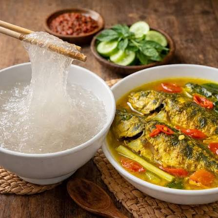

Perpaduan papeda dan ikan kuah kuning merupakan makanan pokok tradisional serta identitas budaya masyarakat Papua.
Cita rasa papeda yang netral dan bertekstur lengket berpadu sempurna dengan ikan kuah kuning yang kaya rempah, asam, dan gurih.
Detail Kuliner
Bagi masyarakat adat Papua, papeda biasanya disajikan dalam wadah besar untuk satu keluarga.
Momen makan bersama ini menandai ikatan kekeluargaan, gotong royong, dan kebersamaan.
Papeda memiliki posisi penting dalam sejarah prasejarah Nusantara. Sajian ini
wajib hadir dalam berbagai ritual adat,
perayaan penting suku, hingga upacara pubertas gadis muda di beberapa wilayah timur.

Kandungan yang terdapat dalam kuliner
Papeda yang berbahan dasar sagu merupakan sumber energi utama yang secara alami bebas gluten, rendah lemak, dan bebas kolesterol.
Sagu juga mengandung pati resistan yang berfungsi sebagai prebiotik untuk kesehatan pencernaan. Ikan Kuah Kuning
melengkapi hidangan ini dengan kandungan protein hewani berkualitas tinggi, asam lemak omega-3, serta vitamin. Penggunaan rempah-rempah
dalam kuah kuning—seperti kunyit, jahe, dan serai—menyumbang senyawa aktif yang bersifat antiinflamasi dan kaya antioksidan.
Potensi Kuliner
Papeda
Papeda yang menjadi salah satu makanan khas tradisional Papua memiliki warna putih bening, bertekstur kental, lengket menyerupai lem, dan berasa tawar.
Rasa tawar ini sengaja dibuat agar menyatu sempurna saat disiram kuah gurih.
Ikan Kuah Kuning
Pendamping setianya adalah ikan (seperti tongkol atau kakap merah) yang dimasak dengan bumbu kunyit, serai, jahe, dan jeruk nipis.
Kuah ini bercita rasa asam, gurih, dan hangat.
Cara Menikmati
Dengan cara makan yang unik, Papeda tidak dikunyah.
Cara menikmatinya adalah dengan melilitkan papeda menggunakan gata-gata atau garpu, lalu ditaruh kedalam piring yang sudah ada kuah ikan,
setelahnya diseruput langsung bersama kuah ikan yang panas.
Unggulan Kuliner
Menu Favorit
Papeda dan ikan kuah kuning menjadi kuliner unggulan karena perpaduan papeda yang lembut dan netral dengan kuah ikan yang gurih, segar, serta kaya rempah.
Selain memiliki cita rasa yang khas, hidangan ini juga mencerminkan kekayaan bahan lokal dan budaya masyarakat Papua, sehingga tetap menjadi salah satu menu yang banyak digemari.